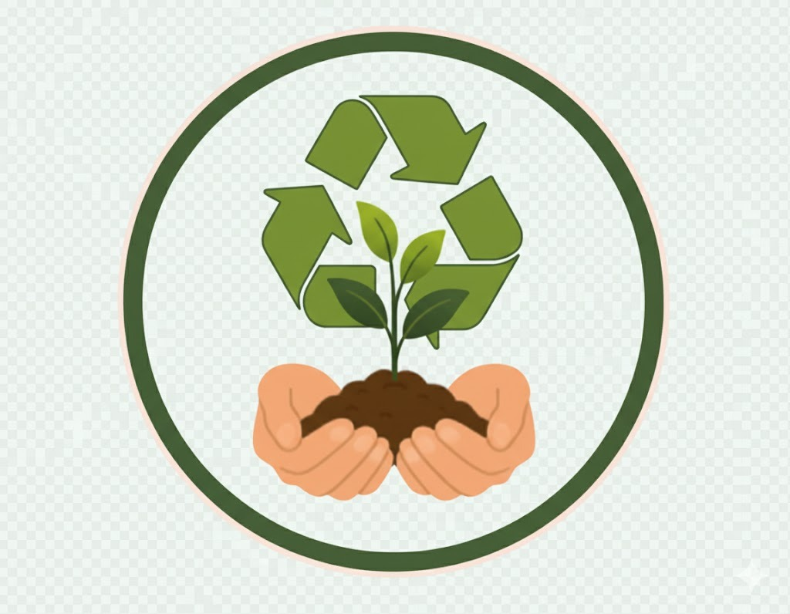

Consulta rutas y horarios, y reporta incidencias de recoleccion desde un solo lugar.
Crea reportes con tipo de incidencia, ubicacion y descripcion.
Busca por ruta, colonia, calle u horario y visualiza el recorrido.
Revisa tus datos y gestiona tu sesion.